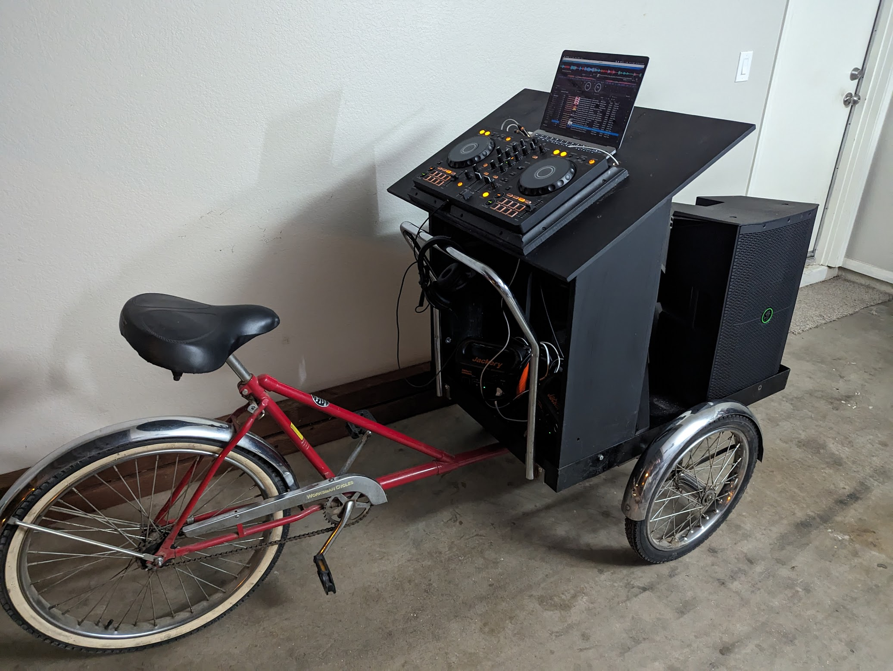

Luis Montes
@monteslu@Fosstodon.org
 @monteslu
@monteslu 
"Get a bunch of bikes and ride them around with your friends. It's the sh*t."
-Tyler The Creator
"Build a DJ Bike and ride it around with your friends. It's the sh*t." -me

Canvas
function paint() {
const context = canvas.getContext('2d');
context.fillStyle = 'rgb(200, 0, 0)';
context.fillRect(10, 10, 50, 50);
context.drawImage(coolPic, 30, 30, 200, 100);
requestAnimationFrame(paint);
}
requestAnimationFrame(paint);
WebGL
const gl = canvas.getContext("webgl");
// setup OpenGL Shader Language (GLSL) program:
// vertex shader & fragment shader
// add some boilerplate code load and program it into the GPU
...
boilerplate code
GLSL
- C-like syntax
- built in functions (sin, cos, etc)
- typed: (vec2, vec3, vec4, etc.)
- swizeling
Vertex Shader
// passed in from the javascript
attribute vec4 a_position;
void main() {
// gl_Position is a special variable to return
gl_Position = a_position;
}
Fragment(pixel) Shader
void main() {
// gl_FragCoord is the x & y coordinates in canvas space
// gl_FragColor returns this pixels RGBA value
gl_FragColor = vec4(gl_FragCoord.x / 640.0, 0.0, 0.0, 1.0);
}
Uniforms
- time
- mouse
- resolution
- audio
- textures
- anything from your browser!
spectralCentroidZScore, energy, beats, etc.
WebGPU - May 2023
- Abstraction later (Vulkan, Metal, and DirectX 12 )
- Not Just for Browsers
- WGSL
WebGPU programming
- Vertex Shaders
- Fragment Shaders
- Compute Shaders ?!?!?
remove vocals! singing-to-text!
compare your vocals to the original!
Thank You!
Luis Montes
@monteslu@Fosstodon.org
 @monteslu@Fosstodon.org
@monteslu@Fosstodon.org